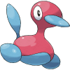

List of Pokémon GO glitches
This page has information paraphrased from Bulbapedia.
| |
|  | As such, it has also not been fully reviewed by the Glitch City Laboratories verification team. Source for attribution: Article history of Bulbapedia's article |
This article is a list of glitches in Pokémon GO.
Contents
- 1 Perpetual item use error
- 2 Backpack freeze glitch
- 3 Grimer glitch
- 4 Gym 1 HP glitches
- 5 Egg Gym glitch
- 6 Pokédex glitch
- 7 Size Medal glitches
- 8 Shadow glitch
- 9 Sound glitches
- 10 Three footprint glitch
- 11 Ditto background glitch
- 12 Raid Boss last Premier Ball glitch
- 13 Ivysaur glitch
- 14 Nest migration glitch
Perpetual item use error
A glitch in which starting a new account and attempting to use a Poké Ball on the starter at the beginning of the game may result in an error code (i.e. error 26 recorded) that persists even after closing the app/re-installing the game, but can be avoided by linking another email address (and using that address). (Reported February 10, 2019) Error messages such as these have also been reported on periodic occasions.
Backpack freeze glitch
A glitch in which the game freezes after the player opens their backpack when a Pokémon is fleeing. It was patched in version 0.31.0.
Grimer glitch
A glitch in which finding a Grimer or hatching a Grimer from an Egg can freeze the game. It occurs in versions up to 0.31.0.
Gym 1 HP glitches
Glitches involving a Pokémon reduced to 1 HP. Unless a status move is used, it can prevent the Pokémon from fainting or prevent the player from starting the battle or switching.
Egg Gym glitch
A glitch in which the player puts an Egg in an empty gym, resulting in an un-fightable Egg appearing with no model and 0 CP.
Pokédex glitch
A glitch in which various letters appear on the screen while viewing a Pokémon in the Pokédex, or in which the currently viewed entry is changed to the first Pokémon. Verified in versions 0.29.0 to 0.29.3, and patched in version 0.31.0.
Size Medal glitches
A text error in which the requirement for Youngster and Fisherman medals stated a size requirement of "at most" instead of the intended size category requirement (e.g. XS). This was changed to say "Caught (number of XS/XL) Rattata/Magikarp." in version 0.29.2 and "Caught (number) tiny/big Rattata/Magikarp." in version 0.29.3.
Shadow glitch
A glitch in which immediately using a Poké Ball can cause it to fall under the ground and producing a shadow that increases in size. It will also cause the game to freeze. This glitch was patched in version 0.31.0.
Sound glitches
A glitch in which a notification on an Android device may cause the music to stop. Verified up to version 0.31.0.
Three footprint glitch
A glitch in which all Pokémon have a three footprint step counter icon between the 0.29.2 and 0.29.3 versions. No longer occurs from version 0.31.0 due to the removal of footprints.
Ditto background glitch
A glitch that reportedly still occurs, and was found since the 0.63.1 release. It causes the appearance of a Ditto on the screen with a transformed background present.
Raid Boss last Premier Ball glitch
A glitch in which a Premier Ball will fail against a Raid Battle boss Pokémon if its the player's last instance of the item. Reportedly the ball will always break before the first shake.
Ivysaur glitch
A glitch in which viewing Ivysaur's model can force all Pokémon to be invisible. Encounters and gym battles may also freeze the game.
Nest migration glitch
A glitch involving a changing nest Pokémon in a nest migration, and the inability to click on it without exiting the game.[clarification needed]